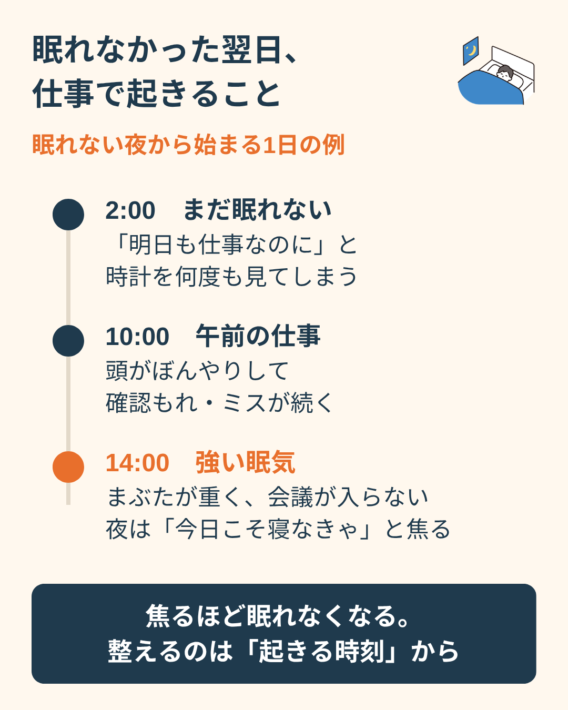
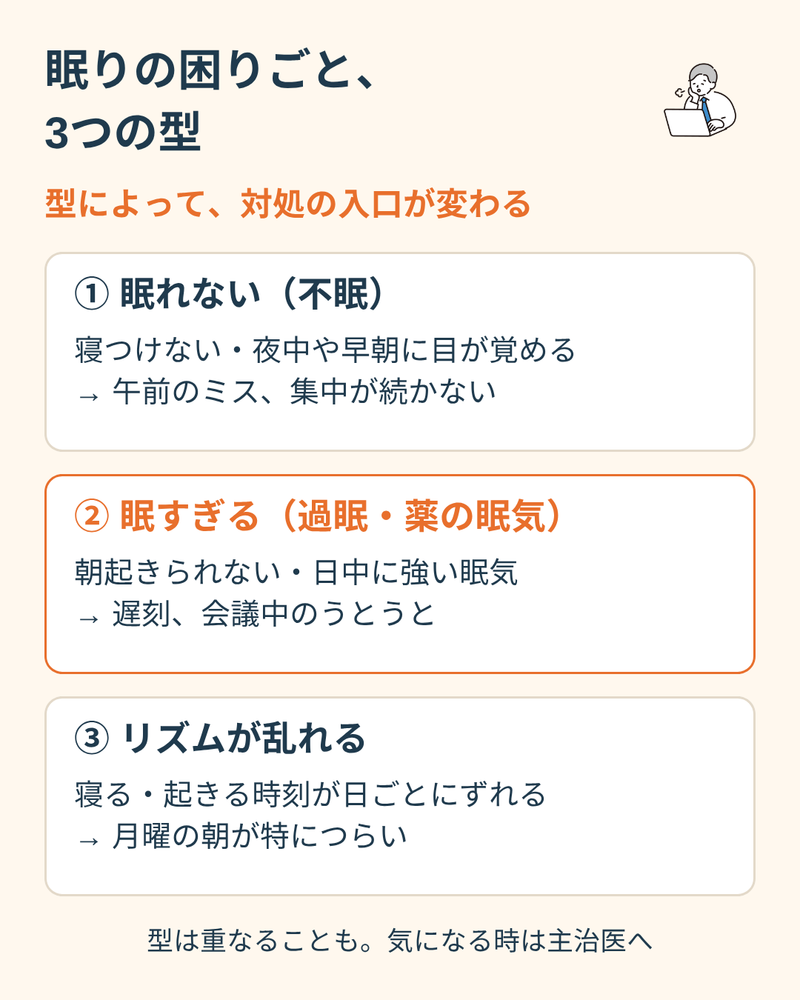
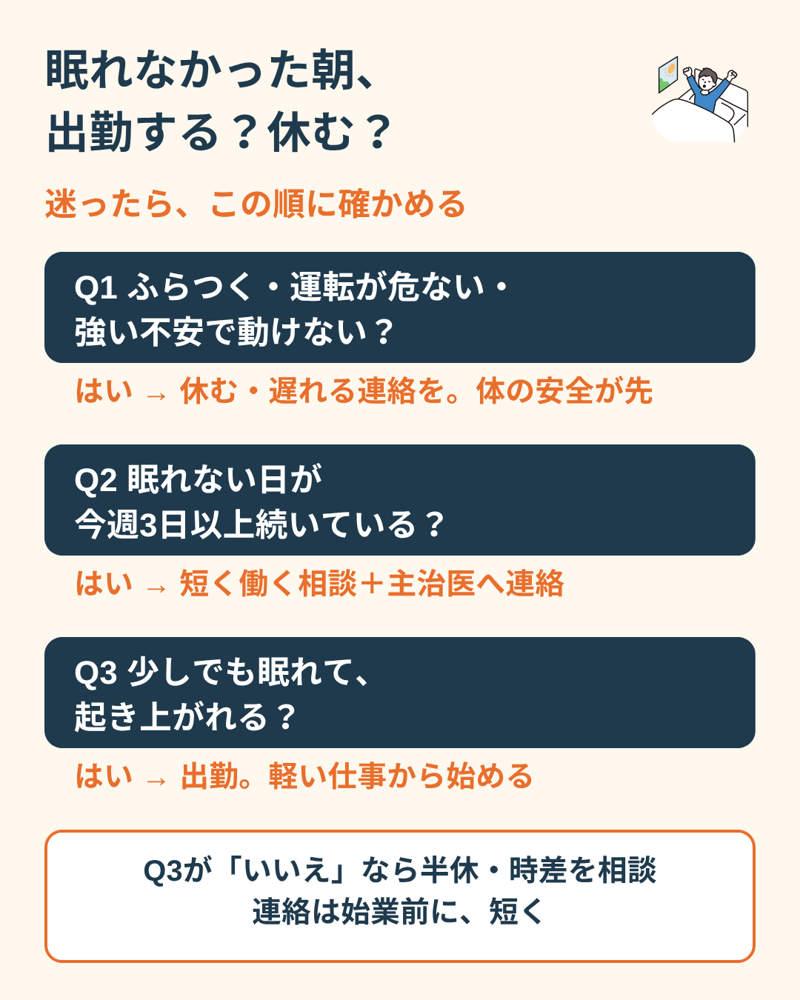
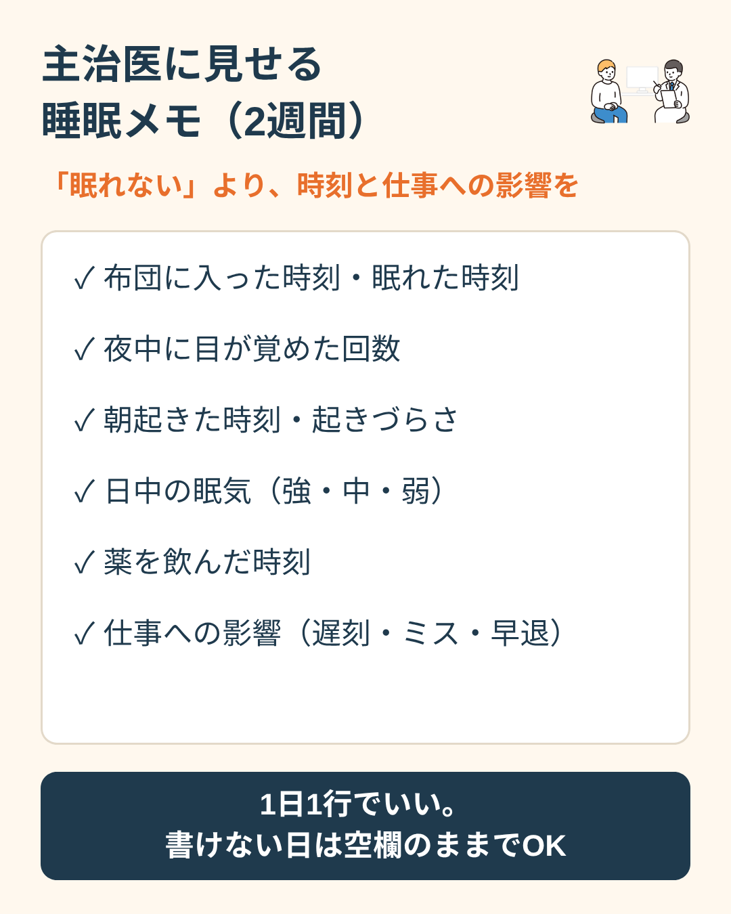
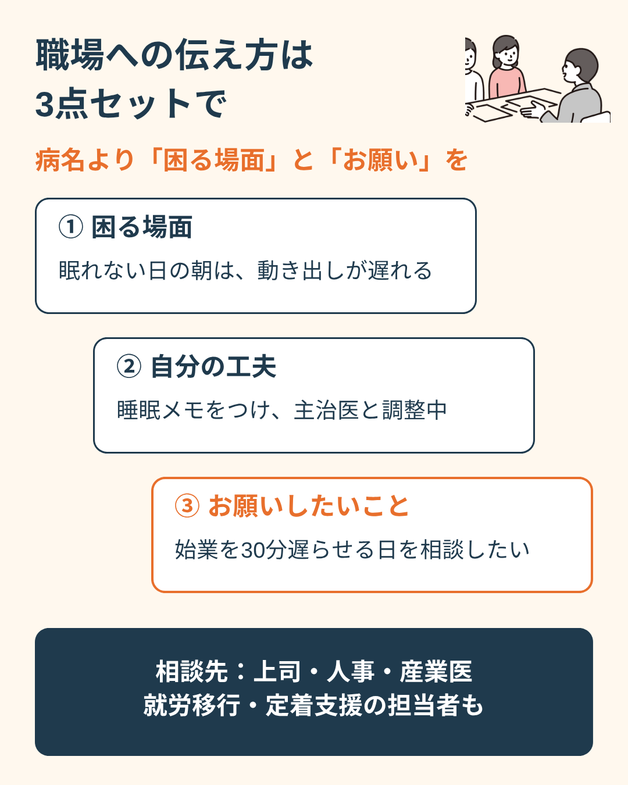

眠れなかった翌朝、仕事で起きていること
就労支援の現場でよく聞くのは、「眠れなかった日は、仕事の中身より自分を責める気持ちのほうがしんどい」という声です。眠れないこと自体もつらいのですが、翌日にミスをすると「寝られなかった自分のせいだ」と考え、その夜は「今日こそ寝なきゃ」と力が入り、かえって目がさえてしまう。眠りの問題は、一晩で終わらずに次の日、その次の日へと連鎖しやすいのが特徴です。
たとえば、こんな1日です。夜11時に布団に入っても眠れず、深夜2時にもまだ天井を見ている。「明日は朝礼で発表があるのに」と思うほど、頭の中で段取りがぐるぐる回ります。朝6時半に目覚ましで起きたときには、眠れたのは3時間ほど。出勤はできたものの、10時ごろには頭がぼんやりして、メールの宛先を確認し忘れたり、数字を1けた打ち間違えたりします。昼食のあと14時ごろには強い眠気が来て、会議の話が耳を素通りしていきます。帰宅すると疲れているのに、布団に入るとまた「今日のミス」を思い出してしまう。

眠りが足りない日は、集中力・注意力・記憶・気持ちのコントロールが落ちやすいと言われています。厚生労働省の「健康づくりのための睡眠ガイド2023」でも、睡眠不足や睡眠の質の低下が、日中の眠気や作業の効率に影響することが示されています。つまり、眠れなかった翌日にミスが増えるのは、気合いや性格の問題ではなく、体の状態として起こりやすいことです。
精神障害や発達障害のある方は、眠りの困りごとを抱えやすいとされています。うつ状態で朝早く目が覚めてしまう、不安で寝つけない、薬の影響で朝起きにくい、ADHDの特性で夜にスマホや作業をやめられず寝る時刻が後ろにずれていく、といった形はさまざまです。大事なのは、「眠れない自分がだめ」ではなく、「眠れない夜のあとは、こういうことが起きやすい」と知っておくことです。そうすると、翌日の過ごし方や、誰に何を相談するかを前もって決めておけます。
「眠れなかった日は、朝の電車でもう『今日はミスする日だ』と思っていました。実際にミスをすると、やっぱりと落ち込んで、夜また眠れない。支援員さんに『眠れなかった日は、午前中に大事な判断を入れないようにしよう』と言われて、少し楽になりました。」
眠りの困りごとは3つの型。型で対処の入口が変わる
ひとことで「眠りの問題」と言っても、中身は人によって違います。ここでは仕事への出方に注目して、大きく3つの型に分けてみます。自分がどれに近いかが分かると、主治医に伝える内容や、職場で頼むことがはっきりします。型は重なることも多く、時期によって入れ替わることもあります。

寝つくまでに1時間以上かかる、夜中に何度も目が覚める、まだ暗いうちに目が覚めてそのまま眠れない、といった形です。うつ状態では早朝に目が覚める形が見られることがあり、不安が強いときは寝つきが悪くなりやすいと言われます。仕事では、午前中の集中が続かない、確認もれが増える、ちょっとしたことでイライラする、といった形で出やすくなります。「眠れない日が週に何日あるか」「どのくらい続いているか」が、主治医に伝えるときの手がかりになります。
朝どうしても起きられない、日中に強い眠気が来る、休日は12時間以上眠ってしまう、といった形です。双極性障害やうつ状態の時期によって眠りすぎることがあるほか、精神科の薬の中には眠気が出やすいものもあります。仕事では、遅刻、会議や単調な作業中のうとうと、運転や機械作業での危なさ、という形で出ます。自己判断で薬を減らしたりやめたりせず、眠気が仕事に出ていることを主治医に伝えるのが入口です。薬の眠気と仕事の両立は精神科の薬を飲みながら働く人へ。眠気・昼の服薬・職場への伝え方で詳しくまとめています。
寝る時刻と起きる時刻が日によって大きくずれる形です。平日は6時に起きているのに、休日は昼まで寝てしまい、日曜の夜に眠れなくなって月曜の朝がいちばんつらい、というパターンがよくあります。ADHDの特性がある方は、夜に好きなことや作業に没頭して寝る時刻がどんどん遅くなりやすいと言われます。仕事では、週の前半に体調が崩れやすい、遅刻が月曜に集中する、という形で出ます。この型は、生活の工夫で変えやすい部分が比較的多い型でもあります。
眠れなかった朝、出勤する？休む？判断の目安と連絡の仕方
眠れなかった朝にいちばん迷うのは、「行くか、休むか」です。休めば「また休んでしまった」と落ち込み、無理に行けばミスをして落ち込む。どちらを選んでも自分を責めてしまうので、朝の数分で決めきれず、連絡が遅れてさらに気まずくなる、という流れもよく聞きます。だからこそ、眠れた夜に、元気なうちに「眠れなかった朝の決め方」を決めておくのがおすすめです。下の図は、その一例です。

最初に確かめたいのは、体の安全です。ふらつく、車や自転車の運転が危ない、強い不安や動悸で体が動かない、という朝は、無理に出勤するより休むか遅れる連絡を入れるほうが安全です。特に車通勤の方や、機械・高所の作業がある方は、眠気を甘く見ないでください。
次に、眠れない日が続いているかどうかです。1日だけ眠れなかったのと、今週すでに3日目なのとでは、意味が違います。眠れない日が続いているときは、その日を乗り切ることより、主治医に早めに連絡して相談すること、職場に「しばらく短めに働けないか」を相談することが大切になります。予約日まで待たずに、病院に電話で相談できるかを確かめておくと安心です。
少しでも眠れて起き上がれるなら、出勤してみる選択もあります。その場合は、午前中に大事な判断や細かい数字の確認を入れない、昼休みに15〜20分ほど目を閉じて休む、帰りに予定を入れない、といった「眠れなかった日の過ごし方」をあらかじめ決めておくと、1日を乗り切りやすくなります。ミスが起きやすい作業は、ダブルチェックをお願いしておくのも一つの方法です。
休むことよりも、休みの連絡をする電話がいちばん怖い、という方も多くいます。「行きたくないから休んでいると思われないか」「理由を細かく聞かれたらどうしよう」と考えるうちに、始業時刻を過ぎてしまう。連絡は、理由を長く説明するより、短く要点だけ伝えるほうが、自分にとっても相手にとっても負担が少なくなります。
「おはようございます。体調不良のため、本日はお休みをいただきたいです。急ぎの〇〇の件は、△△さんに引き継ぎをお願いしてあります。明日の朝、改めてご連絡します。」
遅れる場合は「体調不良のため、10時ごろの出社になります。午前の会議には間に合わない見込みです。」のように、何時に来られるかと影響のある予定だけ伝えます。
連絡の文面は、スマホのメモに下書きしておくと、つらい朝でも送りやすくなります。職場によっては、チャットでの連絡を認めてもらえる場合もあります。電話がどうしても難しい場合は、そのこと自体を、体調のよい日に上司や支援者と相談しておくとよいでしょう。
主治医には「眠れない」より「時刻と仕事への影響」を伝える
眠りの問題は、主治医に相談することで変えられる部分があります。薬の種類や量、飲む時刻の調整、眠りを助ける薬の検討など、医師が取れる手段はいくつかあります。ただ、診察の時間は限られていて、「最近眠れなくて」と伝えるだけでは、どのくらい困っているかが伝わりにくいことがあります。
そこで役に立つのが、2週間ほどの睡眠メモです。眠れた・眠れないの感想ではなく、時刻と回数、そして仕事への影響を書きます。完璧に書く必要はなく、1日1行で十分です。

たとえば、「11/3（月）布団23時→眠れたのは2時ごろ、4時に1回起きる、起床6時半、日中の眠気：強、薬22時、仕事：午前に入力ミス2件」のように書きます。2週間分が並ぶと、「月曜の前の夜が特に眠れない」「薬を飲む時刻が遅い日は朝がつらい」など、自分でも気づかなかった傾向が見えてくることがあります。スマホのメモでも、紙の手帳でもかまいません。睡眠を記録するアプリを使うのも一つの方法です。
診察では、メモを見せながら、次の3つを伝えると話が進みやすくなります。
- いちばん困っていること（例：寝つけない日が週4日ある／朝起きられず遅刻が月3回）
- 仕事にどう出ているか（例：午前中の入力ミスが増えた、会議中に眠ってしまう）
- どうなりたいか（例：平日は6時半に起きられるようになりたい、日中の眠気を減らしたい）
「薬が変わってから朝起きられなくなって、遅刻が増えました。最初は言い出せなかったけれど、2週間のメモを見せて『朝起きられず、仕事に支障が出ている』と伝えたら、飲む時刻と量を調整してもらえました。言わなかったら変わらなかったと思います。」
伝えにくいときは、メモの最後に「仕事に支障が出ていて困っています」と1行書いておき、そのページを見せるだけでも大丈夫です。診察で話せなかったことは、次回までにメモに足しておきましょう。
眠りのリズムを整える、今日からできる工夫
薬や治療とあわせて、毎日の過ごし方で整えられる部分もあります。どれも「全部やる」必要はありません。続けられそうなものを1つか2つ選び、2週間ほど試して、睡眠メモで変化を見てみてください。
リズムを整える基本は、寝る時刻より起きる時刻をそろえることだと言われています。眠れなかった夜のあとも、できるだけいつもの時刻に起きて、朝の光を浴びます。休日も、平日との差を2時間以内にとどめると、月曜の朝のつらさが和らぎやすくなります。「眠れなかったから朝は寝ていよう」を続けると、夜にまた眠れなくなる、というくり返しになりやすいためです。
布団の中で「眠らなきゃ」と30分以上がんばっていると、布団が「眠れない場所」になってしまうことがあります。眠れないときは、いったん布団から出て、暗めの明かりの中で静かに過ごし、眠気が来てから戻る方法があります。時計を何度も見ると焦りが増えるので、時計は見えない位置に置くのもおすすめです。
- 昼寝は15時より前に、20〜30分程度にとどめる（長く寝ると夜に響きやすい）
- コーヒーやエナジードリンクなどカフェインは、午後の早い時間までにする
- 寝る1時間前からは、スマホやパソコンの強い光を控える（充電場所を寝室の外にする）
- 寝る前のお酒は、眠りを浅くすることがあるので頼りすぎない
- 休日の朝も、いつもの時刻にカーテンを開ける
厚生労働省の「健康づくりのための睡眠ガイド2023」では、大人はおおむね6時間以上の睡眠を目安にすること、長い時間ベッドで過ごしすぎないことなどが示されています。ただ、必要な睡眠時間には個人差があります。時間の長さにこだわりすぎず、「日中に強い眠気がなく過ごせるか」を目安にしてください。
職場への伝え方と、使える配慮・相談先
眠りの問題を職場に伝えるかどうかは、迷うところです。「眠れないくらいで」と思われそうで言い出せない、という声もよく聞きます。ただ、遅刻やミスが続いてから理由を聞かれるより、先に「こういう日がある」と伝えておくほうが、職場も対応を考えやすくなります。伝えるときは、病名や症状を細かく説明するより、次の3点をセットにすると伝わりやすくなります。

「治療の影響で、眠れない日の翌朝は動き出しが遅くなることがあります（困る場面）。いまは睡眠の記録をつけて、主治医と薬の調整をしています（自分の工夫）。そうした日は、始業を30分遅らせることや、午前中は確認の少ない作業にすることを相談させていただけないでしょうか（お願い）。」
障害者差別解消法や障害者雇用促進法では、事業者に対して、障害のある人から申し出があったときに、負担が重すぎない範囲で「合理的配慮」を検討することが求められています（2026年11月時点）。眠りに関わる困りごとでは、たとえば次のような配慮が考えられます。どこまで対応できるかは職場によって違うため、「できる範囲で」という姿勢で相談するのがよいでしょう。
- 始業時刻を遅らせる、時差出勤やフレックスを使う
- 通院日の休みや、診察に合わせた時間休を取りやすくする
- 午前中は確認の少ない作業にする、ダブルチェックをお願いする
- 短い休憩を取れる場所や時間を決めておく
- 在宅勤務の日を設ける（通勤の負担を減らす）
- 夜勤や不規則なシフトを避ける
職場の中では、直属の上司のほかに、人事担当者、産業医、保健師などの産業保健スタッフに相談できる場合があります。産業医は、仕事と体調の両立について、会社と本人の間に立って意見を出す役割を持っています。職場の外では、主治医や睡眠外来のほか、就労移行支援事業所、就職後に使える就労定着支援（就労定着支援の対象・費用・期間）、地域障害者職業センター、障害者就業・生活支援センターなども、職場との話し合いを一緒に考えてくれる相談先です。休職から戻ったばかりの方は、休職明けの最初の1週間の過ごし方もあわせて読んでみてください。
眠れない本人のそばにいる家族も、心配で落ち着かないことがあります。「早く寝なさい」「昼まで寝ているからだ」と言いたくなる気持ちは自然ですが、本人も眠りたくて眠れないので、責める言葉になると焦りが増えてしまいます。家族ができることとしては、朝のカーテンを一緒に開ける、休日も朝ごはんの時刻をそろえる、夜遅くに大事な話をしない、診察に付き添って家での様子を伝える、などがあります。家族が全部を管理しようとすると双方が疲れてしまうので、本人が決めた工夫を「手伝う」くらいの距離感がちょうどよいことが多いです。家族自身がしんどいときは、自治体の精神保健福祉の相談窓口や保健所など、家族向けの相談先を使うこともできます。
体調の波とのつきあい方全体については、体調の波で仕事が続かない人へ。障害のある方の体調管理と崩れる前の対処法でもまとめています。
よくある質問
関連記事
この記事に、聞いてみたいことはありますか？
「自分の場合はどうなんだろう」と思ったことを、気軽に書いてみてください。いただいた質問は個別にお返事したうえで、匿名で記事にすることがあります。